Uniformes empresariales
Aplicación de logos y nombres sobre camisas, chombas, chaquetas, gorras y prendas de trabajo.
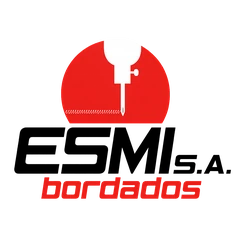
Bordados industriales y DTF
En ESMI Bordados trabajamos cada pieza con precisión, calidad y una presentación lista para representar bien a tu empresa. También realizamos trabajos en DTF para prendas y textiles personalizados.

Calidad en cada puntada
La calidad de un bordado se nota en los detalles: buena definición, hilos con color consistente, puntadas parejas y una terminación que resiste el uso diario. En ESMI cuidamos la preparación del diseño, la ubicación sobre la prenda y el acabado final para que cada pieza mantenga una imagen profesional.
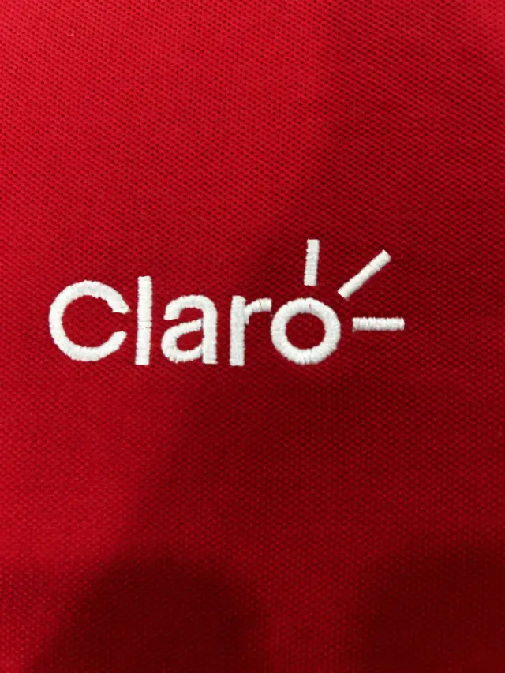
Servicios
Acompañamos pedidos de empresas, equipos, instituciones y emprendimientos que necesitan aplicar su identidad sobre prendas con una terminación durable y prolija.
Aplicación de logos y nombres sobre camisas, chombas, chaquetas, gorras y prendas de trabajo.
Procesos organizados para mantener color, posición y calidad en pedidos chicos, medianos o recurrentes.
Adaptamos cada diseño para que el resultado sea legible, resistente y adecuado al tipo de tela.
También aplicamos DTF para remeras, buzos, uniformes y textiles que necesitan color, detalle y buena presencia.
Personalización
Convertimos tu idea, imagen o logo en una aplicación lista para usar en remeras, camisas, gorras, toallas y otros textiles. Te ayudamos a elegir entre bordado o DTF según el tipo de diseño, la tela y el uso que va a tener cada prenda.
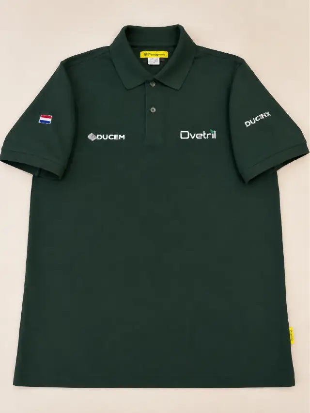
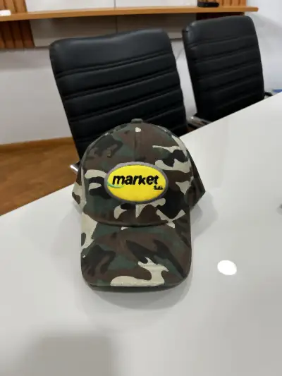
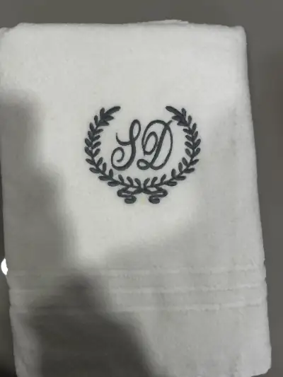
Qué bordamos
Bordado y DTF
Cuando el diseño necesita más color, degradados o detalles finos, el DTF es una buena opción para remeras, buzos, uniformes y pedidos por cantidad. Te ayudamos a elegir entre bordado o DTF según la tela, el diseño y el uso que va a tener la prenda.
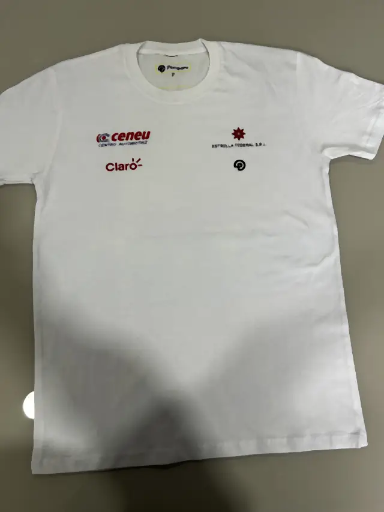
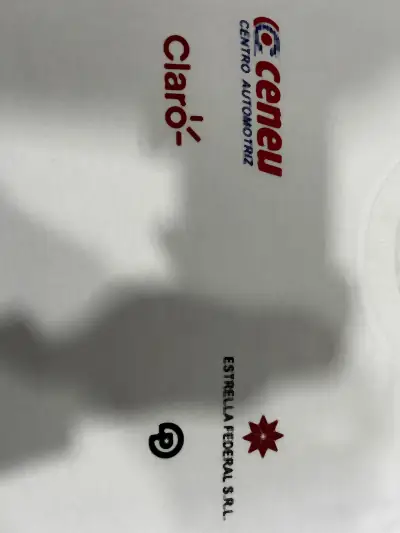
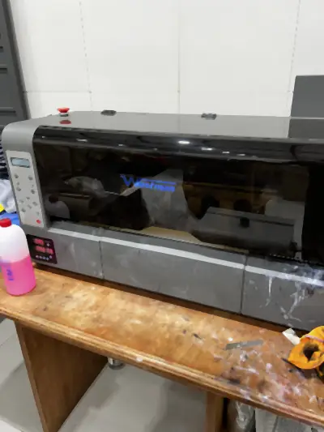
Galería
Gorras, uniformes, mochilas, toallas y aplicaciones DTF producidos en nuestro taller. Tocá cualquier foto para verla en grande.
Proceso
Revisamos logo, cantidad, tipo de prenda y medidas aproximadas.
Ajustamos el archivo para que el diseño sea legible y quede bien aplicado sobre la tela.
Bordamos con control de posición, color y terminación antes de la entrega final.
Nuestro taller
Cada pedido pasa por una revisión del diseño, la preparación del archivo y el control de la prenda antes de la entrega. Trabajamos con procesos claros para mantener la posición, el color y la terminación en bordados, DTF y pedidos por cantidad.
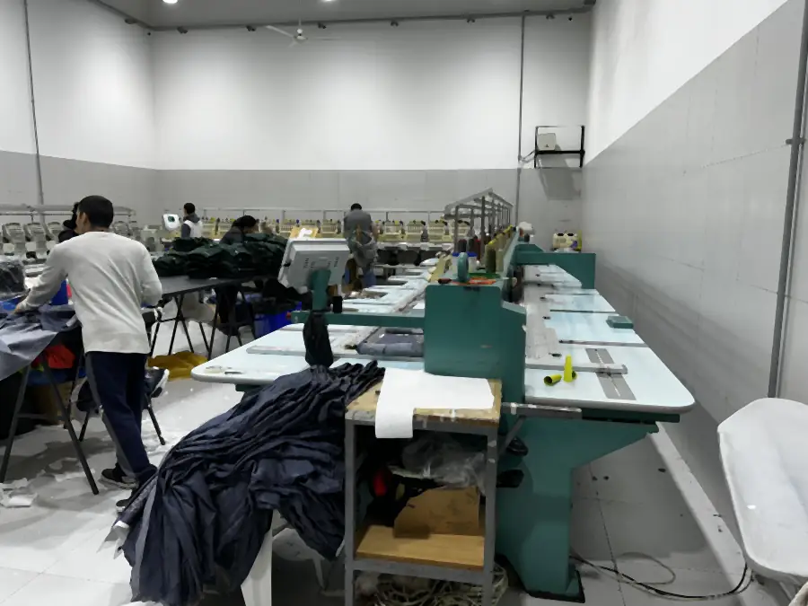
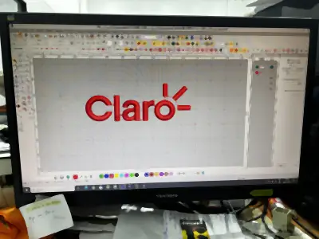
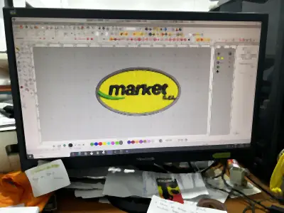
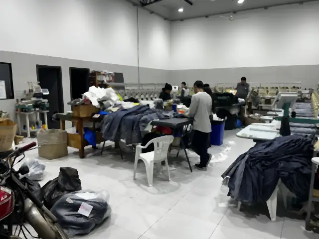
Sobre nosotros
Cuidamos la presentación de cada trabajo desde la preparación del archivo hasta la entrega final. Nuestro objetivo es que tus prendas transmitan confianza, orden y profesionalismo.
Te orientamos sobre tamaño, colores y posición para que el bordado funcione bien en la prenda elegida.
Cuidamos la limpieza del reverso, la tensión del hilo y la uniformidad entre piezas.
Ideal para empresas, instituciones y equipos que necesitan repetir prendas manteniendo la misma identidad.
Preguntas frecuentes
Trabajamos pedidos chicos, medianos y recurrentes. Para bordado conviene agrupar prendas del mismo diseño, porque la preparación del archivo se hace una sola vez y después se repite en cada pieza. Escribinos con la cantidad aproximada y te confirmamos cómo conviene producirlo.
El bordado da relieve, durabilidad y una imagen formal, ideal para uniformes, gorras y camisas. El DTF rinde mejor cuando el diseño tiene muchos colores, degradados o detalles finos, o cuando se aplica sobre remeras y buzos. Revisamos tu archivo y te recomendamos la opción según la tela y el uso de la prenda.
Lo ideal es un vector (AI, EPS, PDF o SVG). Si solo tenés una imagen, mandala en la mejor resolución que tengas: en la mayoría de los casos podemos redibujarla y digitalizarla para bordado.
Sí. Podemos bordar sobre prendas provistas por el cliente o ayudarte a conseguir las prendas. En ambos casos revisamos antes el tipo de tela y la ubicación del bordado para evitar problemas de terminación.
Depende de la cantidad, del tipo de prenda y de si el logo ya está digitalizado. Al pasarnos el diseño y la cantidad te damos un plazo concreto antes de arrancar la producción.
Contactar
Enviá tu logo, la cantidad aproximada y el tipo de prenda. Te ayudamos a definir la mejor forma de producirlo. También podemos recibirte en nuestra sala de reuniones para revisar muestras, materiales y detalles del pedido.
Escribir por WhatsAppParaguay
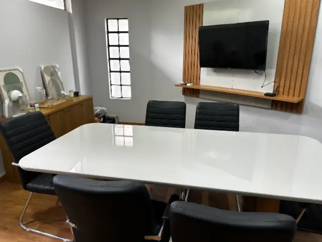
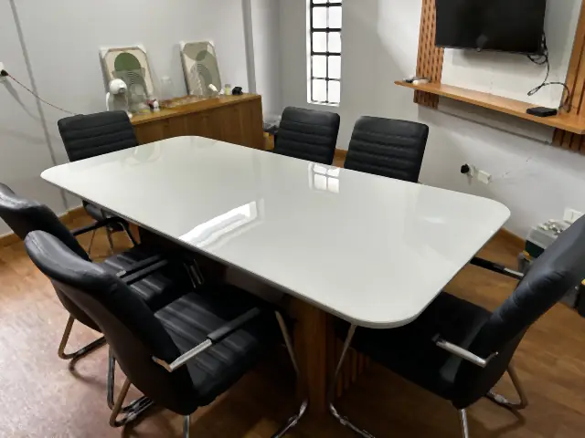